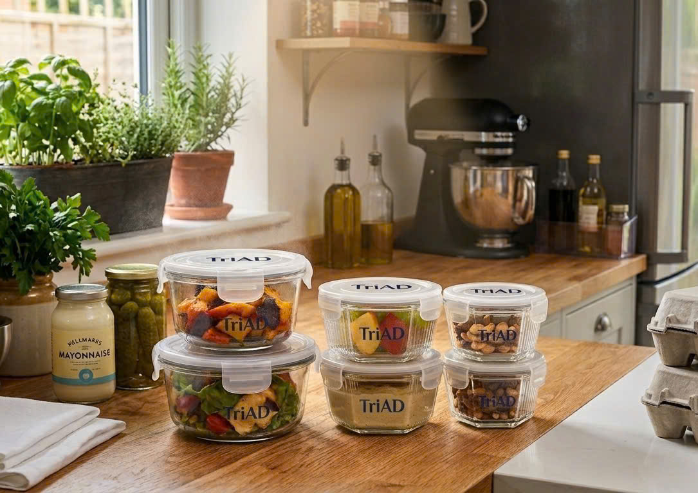

Meal prepping is one of the most effective ways to save time, eat healthier, and reduce stress during the week. With a little planning and the right tools, you can transform your eating habits and enjoy delicious homemade meals every day.
Before you hit the grocery store, take 15 minutes to plan your meals for the week. Choose recipes that share ingredients to minimize waste and save money.
The right containers make all the difference. Our TriAD glass containers are perfect for meal prep - they're microwave-safe, leak-proof, and keep food fresh for days.
Cook large batches of grains, proteins, and roasted vegetables at the beginning of the week. This makes it easy to assemble quick meals in minutes.
Don't overcomplicate your meal prep. Start with simple recipes and gradually build your skills and confidence.
Put on your favorite music or podcast while you prep. Involve family members or roommates to make it a fun group activity.
Explore our collection of premium glass containers designed specifically for meal prep.
Shop Now